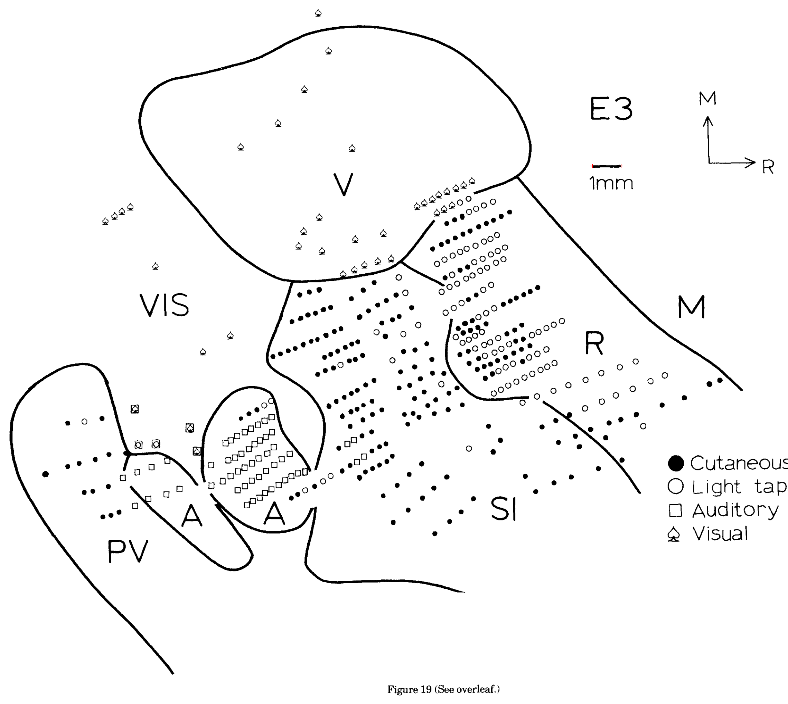
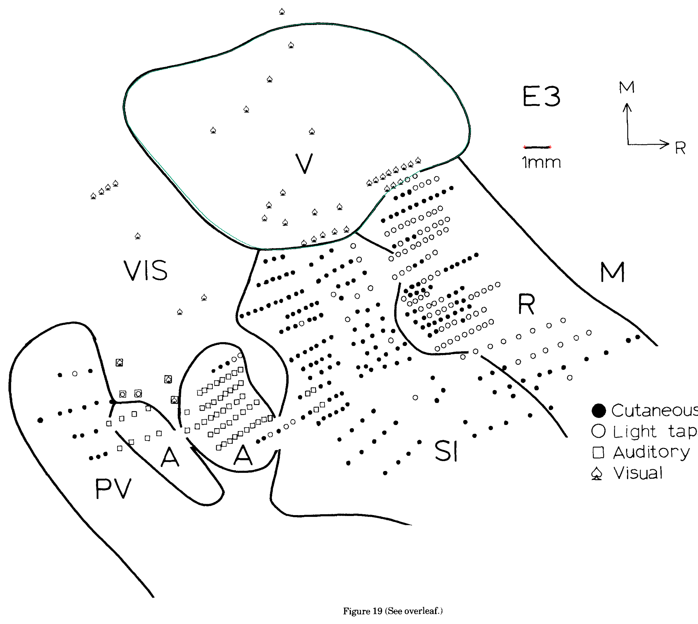

fig19
Added V. Remaining field limits are recorded individually in the canonical unmeasured entries. V is explicitly approximate because the enlarged image revealed a gap among recording symbols; excluded from complete-field summaries.
Editable ImageJ ROIs · Canonical geometry


Source and remaining limits
- SI: Whole-field perimeter is open, dashed, interrupted or outside this local sampling reconstruction. Thin body-part cells and isolated myelinated patches do not establish a complete total field.
- R: Whole-field perimeter is open, dashed, interrupted or outside this local sampling reconstruction. Thin body-part cells and isolated myelinated patches do not establish a complete total field.
- PV: Whole-field perimeter is open, dashed, interrupted or outside this local sampling reconstruction. Thin body-part cells and isolated myelinated patches do not establish a complete total field.
- M: Whole-field perimeter is open, dashed, interrupted or outside this local sampling reconstruction. Thin body-part cells and isolated myelinated patches do not establish a complete total field.
- A: 2026-10-20 reassessment: Both A components have undrawn junction segments among recording symbols. The left A/PV separator and right A/SI limits cannot be recovered uniquely as complete fields.